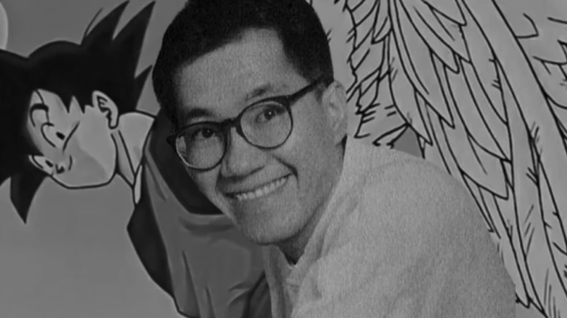

Confira a Notícia:
Infelizmente, o autor de Dragon Ball - Akira Toriyama - faleceu aos 68 anos. E, agora, a Archie Comics presta uma homenagem ao mangaká responsável por obras como Sandland e Dr. Slump. Adaptando livremente o conto chinês Jornada ao Oeste, Dragon Ball surgiu em 1984.
A franquia começa contando a história do pequeno Goku, um garoto com uma força extraordinária e um rabo de macaco, que viveu até então isolado da humanidade, e tem sua vida mudada quando uma jovem aventureira chamada Bulma o conhece, procurando por uma das lendárias Esferas do Dragão.